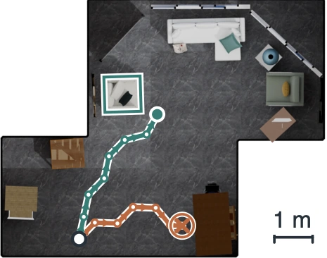
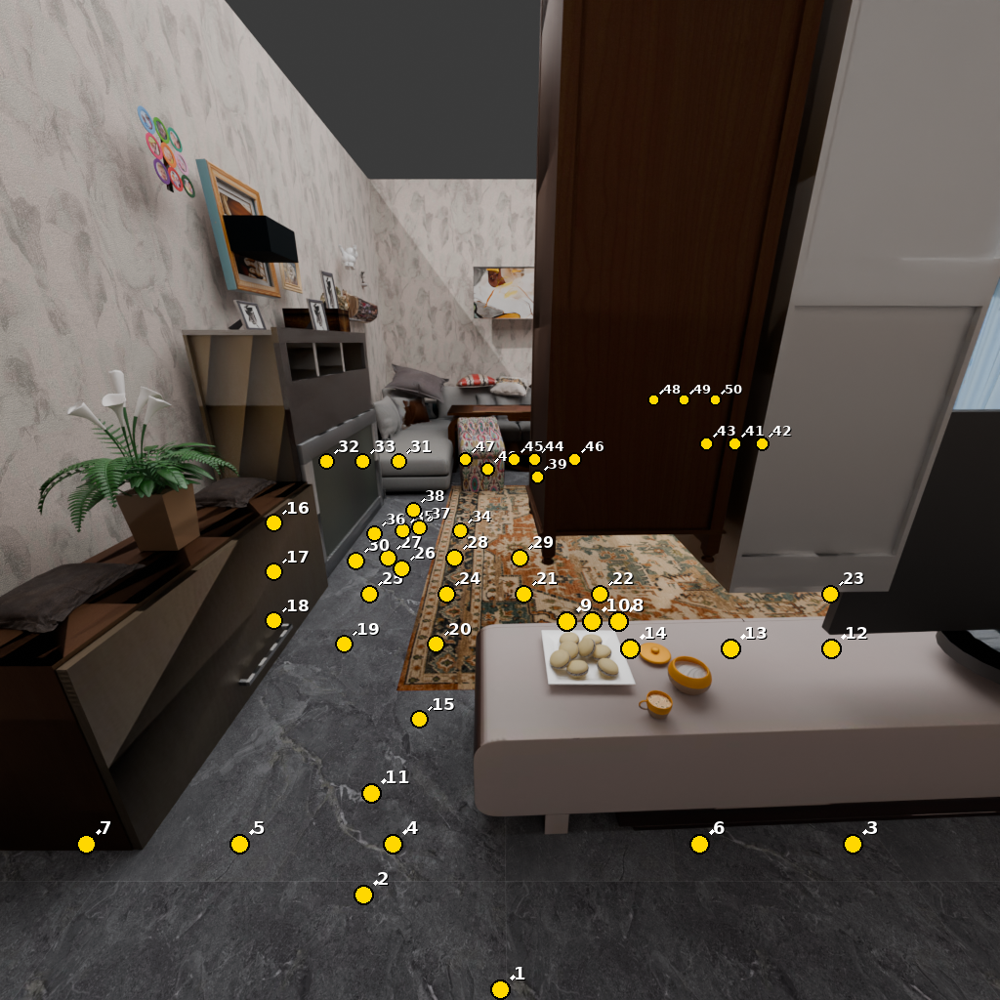
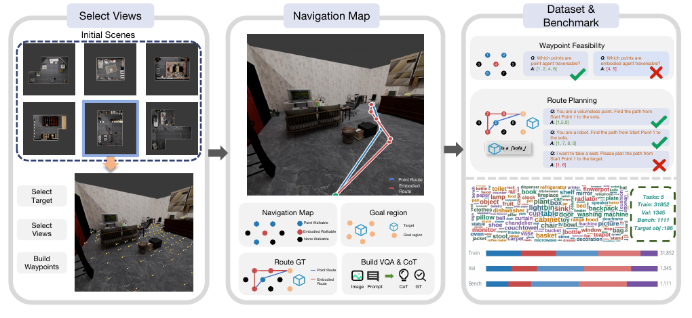

Adding a robot footprint
GPT-6 Astra leads the zero-shot ranking. Its success rate falls from 41.7% on Point Path to 10.0% on the paired Embodied Path questions.
Embodied navigation benchmark
Can a vision-language model plan a route a robot can follow?
One first-person image, a goal, and numbered waypoints. Five tasks test whether the model can choose each step and reach the target in a real 3D scene.
Zero-shot leaders · EgoPath Score out of 100

Model evaluation
1,111 questions across 255 held-out scenes. Compare overall scores or inspect the metrics for each task.
Loading results…
EgoPath Score gives equal weight to five tasks. For each traversability task, the contribution is twice balanced accuracy (BA) minus one. For each path task, it is the success rate (SR). The mean is scaled to 100. All task metrics are percentages.
F1 measures precision and recall on feasible waypoints. Valid path rate (VPR) checks every edge. SR also requires arrival at an acceptable endpoint. SPL weights successful routes by their length relative to the shortest legal path.
Research findings
GPT-6 Astra leads the zero-shot ranking. Its success rate falls from 41.7% on Point Path to 10.0% on the paired Embodied Path questions.
On a matched 50-question subset, the human reference leads Astra on EgoPath Score. Both succeed on 30% of the Embodied Path questions.
EgoPath-SFT improves Qwen3.5-4B from zero to ten successful episodes on the same 50 tasks across 25 held-out Isaac Sim scenes.
Across ten models, 91.1% of Embodied Path predictions start with a legal edge. Only 8.4% stay legal throughout, and 1.9% reach an acceptable endpoint along a legal route.
In a separate RGB-only study, four participants judged 40 short embodied paths and correctly classified 140 of 160 judgments (87.5%).
On 50 matched route questions, Astra correctly labels 308 of 318 legal edges but only 21 of 59 illegal edges when asked about them individually.
Each rate uses all predictions for that task across the ten zero-shot models.
Benchmark tasks
Explore real prompts and observations. Each question pairs a first-person view with visible waypoint IDs. Registered 3D geometry supplies the evaluator’s ground truth.

ACTUAL BENCHMARK OBSERVATIONSelect every visible candidate that is traversable when the agent has no body width. This tests waypoint-to-scene correspondence and candidate feasibility.
The image shows numbered candidate points. Output a JSON array of display IDs that are walkable.
The two traversability examples share a scene and view. The Point Path and Embodied Path examples also share a scene, view, and target.
First-person RGB and visible numbered waypoints are supplied to the model.
The prediction is a candidate set or an ordered route, expressed as a JSON array.
The evaluator checks agent-specific feasibility, every selected edge, and the endpoint.
It is not the only answer a model may give. Any predicted route is evaluated against the same geometry and acceptable goal regions; path efficiency is measured after success. Scene geometry and ground-truth sidecars belong to the evaluator, not the model input.

Scenes and views → visible waypoints and targets → point/embodied feasibility graphs → verified reference routes → questions and spatial CoT. Splits are formed by source group to keep related scans or regions together. The release contains 31,852 training, 1,345 validation, and 1,111 benchmark questions.
Training resource
Fine-tune on 31,852 examples pairing spatial reasoning with geometry-verified answers, then evaluate on held-out scenes and external spatial tasks.
EgoPath Score on the full in-domain benchmark. Every metric reported in the paper’s training comparison improves.
Four reported settings across three benchmarks. Gains are percentage-point differences, with each base/SFT pair evaluated on the same items. Revised study, Table 4.
Open research
Evaluating Zero-Shot Egocentric Waypoint Decision-Making in Vision-Language Models.
GitHub · MITInference, scoring, dataset construction, and training tools.
Hugging Face · 33.39 GBTrain, validation, and benchmark splits with visual assets and evaluation metadata.
Leaderboard and study results reflect the November 2026 revision. Dataset license: CC BY-NC-SA 4.0, subject to upstream asset terms. Original scene meshes are not redistributed.
Shanghai Jiao Tong University · *Corresponding author
@misc{zhao2026egopathbench,
title={EgoPathBench: Evaluating Zero-Shot Egocentric Waypoint Decision-Making in Vision-Language Models},
author={Yang Zhao and Zhuo Chen and Xubo Yang},
year={2026},
eprint={2609.16610},
archivePrefix={arXiv},
primaryClass={cs.CV},
url={https://arxiv.org/abs/2609.16610}
}